生物行为
本站支持中英文站内搜索。带 ↗ 的链接指向外部网站；各页来源版本见页脚。
本文详述生物行为，即决定生物寻找目标、移动、攻击及逃跑的逻辑。敌对生物用怪物人工智能，鹿及野兔等被动动物用较简单的动物人工智能。
感应
生物通过听觉或视觉察觉其他生物及玩家。
- 听觉：目标在听觉范围内，且距离低于自身噪音范围时可被听见。地下城及室内听觉范围上限12米。
- 视觉：目标在视距乘潜行系数以内，且生物眼睛与目标间无遮挡时可被看见；蹲伏时检查目标中心。未警戒者只看前方视角范围，警戒者看全方向。迷雾之地迷雾阻挡视线，除非有穿雾视觉。
- 幽灵模式及调试飞行模式玩家既不被听见，也不被看见。
生物进入 警戒 的条件：
- 看见警戒范围乘目标潜行系数内的目标。
- 受到伤害，同时将攻击者设为目标。
- 弹体击中附近。除未警戒时会逃跑的生物外，也会锁定射手。
- 处于追猎模式，该模式使其始终保持警戒。
警戒中的生物会奔跑而非步行。
睡眠
睡眠中的尸鬼及石魔等生物生成时即沉睡，醒前无动作。玩家进入唤醒范围、噪音传到，能被声音唤醒者最多50米，受伤或进入追猎模式时会醒。
瞄准目标
玩家在50米内时怪物每2秒找新目标，否则每6秒。任一生物在32米内时，被动动物每2秒找威胁，否则每10秒。
追猎模式始终警戒。活动生物，以及赤血灵鹿、古树长老、邪骨恶灵、冰霜龙母、亚格鲁斯及堕落战士都会追猎玩家。
追逐目标时，过去15秒未能攻击，会进入持续15秒的“无法攻击目标”模式，更易转而攻击建筑。
生物
选择满足以下条件的最近生物或玩家：
- 目标处于敌对。
- 能听见或看见目标。
- 目标未处于睡眠状态。
- 目标在驻守点警戒范围内，适用于奉命驻守的驯服生物。
- 目标在玩家位置警戒范围内，适用于奉命跟随的驯服生物。
追猎模式找不到目标时，自动锁定200米内最近玩家，无需听见或看见。
优先攻击的建筑
满足以下条件时，选择视距内最近的优先建筑，包括多数玩家基地建筑、制作页全部构件、箱子及船：
建筑也必须能从生物眼睛位置看见。
其他建筑
满足以下条件时，随机选择10米内建筑：
- 生物处于“无法攻击目标”模式。
- 目标生物是无法到达的玩家。
- 生物处于警戒。
- 没有建筑目标，或建筑目标不可达。
- 生物能攻击建筑，例如杀人蜂不能。
- 生物未被驯服。
失去敌意
以下情况下，生物会失去敌意：
- 已连续30秒未看见或听见目标。
- 生物60秒未攻击。追猎模式锁定玩家时跳过此检查。
- 距出生点超过最大追逐距离，且1秒未见或未听目标。无距离上限，或追猎模式锁定玩家时跳过。
失去敌意后移除警戒，追猎模式除外，忘记当前目标，重置未攻击计时。5秒后再次检查目标。
激怒
矮人、巫师扫帚及迷雾法弹可被激怒，之前对玩家中立。以下情况激怒：
- 玩家伤害任一可激怒生物，20米内所有同类均被激怒、进入警戒。
- 玩家伤害其阵营守护石保护对象超过规定次数，矮人为五次、巫师扫帚一次、迷雾法弹四次，或摧毁对象。影响守护石半径两倍内的对应阵营生物。
激怒后视玩家为敌，也可攻击玩家建筑。
行动
每次更新依次检查以下动作，执行首个符合条件者：
- 朝水域移动，适用于避开陆地的生物。
- 离开并消失，夜间生物在白天，事件生物在事件结束后。
- 非首领生物逃离穿英灵神殿之冠的玩家。
- 为避免冲突而逃离目标。
- 低生命值时逃跑。
- 离开熔岩。
- 避开火焰。
- 逃离“无怪物”区域。
- 逃离无法到达的目标。
- 进食。
- 绕目标移动。
- 按选定技能攻击、治疗或辅助。
- 跟随玩家，仅限驯服生物。
- 闲置时移动。
逃跑
奔向水边
设为避开陆地的生物，未游泳时会寻找最深水域并逃去。适用于蚂蟥、蛟龙及骨骺蛟龙。
每0.5或2秒寻找水域，已找到后间隔更长。
检查4至20米内10个随机点。最低点低于水面则跑去，否则保持当前方向，此行为不使用寻路。
离开并消失
白天需消失的生物，若无生物目标或看不见目标，会逃离最近玩家。仅限夜间生成区域生成者。开始驯服后禁用。
事件结束后，事件生物停止追猎。无目标且不再警戒时，远离最近玩家并消失。
寻找40米内最近玩家，找不到则消失；否则寻路至距玩家5米外，每次更新重算路径。
英灵神殿之冠
目标玩家穿英灵神殿之冠时，非首领生物逃跑而不攻击。
为避免冲突而逃离目标
避战生物未警戒且目标在警戒范围外时，会逃离目标。适用于鬓猪、蜥蜴精及母鸡，不适用于事件等追猎模式生物。
鹿、野兔及海豹等被动动物总会逃离察觉到的生物，直到数秒未察觉威胁才解除警戒。
低生命值时逃跑
有低生命阈值的生物，生命低于阈值且近期受伤时逃离目标。灰烬僵尸生命低于90%，且过去4秒受过伤时逃跑。
离开熔岩
站在熔岩的生物会离开，除非目标也在熔岩上方或内部。
避免火
怕火的生物，包括鬓猪、蜥蜴精、母鸡、鹿等被动动物，以及影子：
- 不会随机游荡进火中。
- 进入火源3米内会警戒、逃跑，之后继续逃6秒。
- 逃跑时忘记当前目标。
- 不会随机游荡进火中。
- 进入火源3米范围时，会绕过火源而非穿过。
- 因此攻击距离不足3米的生物，不攻击持火把的玩家，而在周围移动。
- 攻击距离超过3米者可远攻，攻击中进入逃离范围时会改变方向。
驯服生物无视火源。
逃离“无怪物”区域
未驯服生物逃离“禁止怪物”区域内的目标。无目标时，进入边界7.5米内就会逃离区域。
逃离无法到达的目标
30秒未攻击且过去20秒受伤时，生物逃离目标。多数怪物如此，但软泥怪、鬼魅、邪蛛探索者、邪蝠及多数首领不这样逃跑。
进食
能吃物品的生物，多数可驯服者，未警戒或无目标时每10秒在10米内找食物，走向最近可达食物。已驯服者仅饥饿时寻找。
绕目标移动
部分生物定期绕目标而不攻击。例如灰矮人、灰宝宝每6秒，丑地精、厄妖每8秒，平原牦牛、驼鹿、灰烬刚鬣每30秒。绕行持续数秒，默认5秒。
狼、丑地精、蜥蜴精及矮人等许多生物，所有攻击冷却时也会绕目标。
使用技能
有目标时，每秒更新下一技能，选择条件如下：
- 攻击技能仅在目标处于最小及最大攻击距离间时可用。
- 治疗技能仅在自身受伤，或视距内有受伤友军时可用，无需无遮挡视线。
- 辅助技能仅在视距内有其他友军时可用，无需无遮挡视线。
- 冷却中的技能不可用。
- 仅限步行、游泳或飞行的技能，在运动模式不符时不可用。
- 部分技能只能在特定生命值范围内、地下城内或迷雾中使用。
除非某个技能被标记为优先，否则从可用攻击中随机选择下一个技能。
若没有可用技能，则从无法触及目标的攻击技能中随机选择下一个技能，但排除因目标太近而无法使用的攻击。若仍无技能可选，则从全部攻击中随机选择，即使它们尚在冷却中；同样排除目标太近的攻击。
若下一个技能仍在冷却：
- 若生物设定为绕目标移动，就在随机移动距离内围绕目标转圈。
- 朝目标移动，直至进入攻击范围，然后等待技能就绪。
若下一个技能已就绪：
- 建筑：朝目标移动，直至进入攻击范围且视线畅通，然后转向目标并攻击。
- 隐藏的生物：前往目标最后出现的位置，到达后在附近随机移动。若15秒未攻击，则在接下来的15秒内优先攻击建筑。
- 已察觉的生物：更新目标最后出现的位置，朝目标移动，直至进入攻击范围且视线畅通。部分生物会瞄准移动目标前方。目标进入警戒范围且视线畅通时，生物进入警戒；目标进入攻击范围时发动攻击。
- 治疗与辅助：朝友方生物移动，进入攻击范围后使用技能。
跟随
收到跟随命令的驯服生物会走向玩家；距离超过10米时奔跑，进入3米范围后停下。
闲置时移动
没有目标的生物会围绕一个中心点随机移动：若设有巡逻点，则以巡逻点为中心；若已驯服或正在狩猎，则以当前位置为中心；否则以出生点为中心。当它们与中心点的距离超过随机移动范围的两倍时，会跑回中心点。避水的生物不会游荡到水中，避火的生物不会游荡到火中。
生物数据
下表列出常见生物的AI数值。视角达到180°或以上，表示生物能看见所有方向；∞表示没有限制。
| 生物 | 视距（米） | 视角（°） | 听觉距离（米） | 警戒距离（米） | 火焰 | 绕行间隔（秒） | 最大追逐距离（米） |
|---|---|---|---|---|---|---|---|
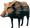 鬓猪 |
20 | 90 | 20 | 6 | 害怕对象 | – | – |
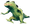 蜥蜴精 |
20 | 90 | 20 | 6 | 害怕对象 | – | – |
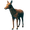 鹿 |
25 | 45 | 15 | – | 害怕对象 | – | – |
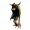 灰宝宝 |
30 | 90 | ∞ | 20 | 避开对象 | 6 | – |
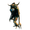 灰矮人 |
30 | 90 | ∞ | 20 | 避开对象 | 6 | – |
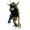 灰矮人暴徒 |
30 | 90 | ∞ | 20 | – | 15 | – |
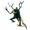 灰矮人萨满 |
30 | 90 | ∞ | 20 | – | – | – |
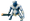 巨魔 |
30 | 90 | ∞ | 20 | – | – | 200 |
| 30 | 90 | ∞ | 20 | – | – | – | |
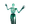 幽灵 |
30 | 90 | 30 | 20 | – | – | – |
| 巨熊 | 25 | 90 | 15 | 6 | 避开对象 | 9 | – |
| 30 | 90 | ∞ | 10 | – | – | – | |
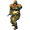 尸鬼精英 |
30 | 90 | ∞ | 10 | – | – | – |
| 软泥怪 | 30 | 90 | ∞ | ∞ | – | – | – |
| 蚂蟥 | 30 | 360 | ∞ | 20 | – | – | 100 |
| 鬼魅 | 40 | 90 | ∞ | 30 | – | – | – |
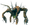 邪煞之树 |
30 | 90 | ∞ | 20 | – | – | – |
| 30 | 90 | ∞ | 20 | – | – | – | |
| 30 | 90 | ∞ | 20 | – | – | – | |
| 30 | 90 | ∞ | 20 | – | – | – | |
| 30 | 90 | ∞ | 20 | – | – | – | |
| 40 | 90 | ∞ | 30 | – | – | 200 | |
| 30 | 90 | ∞ | 20 | – | – | – | |
| 30 | 180 | ∞ | 30 | – | – | – | |
| 30 | 90 | ∞ | 20 | – | 8 | 300 | |
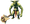 丑地精狂战士 |
30 | 90 | ∞ | 20 | – | – | 300 |
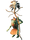 丑地精萨满 |
40 | 90 | ∞ | 20 | – | 15 | 300 |
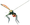 杀人蜂 |
30 | 90 | 30 | 20 | – | – | – |
| 平原牦牛 | 25 | 90 | 15 | 6 | – | 30 | – |
| 焦油怪 | 30 | 90 | ∞ | ∞ | – | – | – |
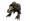 恶骨 |
25 | 90 | 15 | 6 | 避开对象 | 9 | – |
| 30 | 120 | ∞ | 30 | – | 10 | – | |
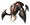 邪蛛士兵 |
30 | 90 | ∞ | 30 | – | – | – |
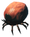 壁虱幼虫 |
30 | 90 | ∞ | 20 | – | – | – |
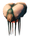 加尔 |
40 | 90 | ∞ | 30 | – | 30 | 200 |
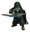 矮人刺客 |
40 | 90 | ∞ | 20 | – | 15 | 300 |
| 30 | 90 | ∞ | 20 | – | – | – | |
| 30 | 90 | ∞ | 20 | – | 7 | – | |
| 35 | 150 | 30 | 10 | – | 30 | – | |
| 30 | 180 | ∞ | 30 | 避开对象 | 20 | – | |
| 30 | 90 | ∞ | 30 | – | – | – | |
| 30 | 180 | ∞ | 50 | – | – | – | |
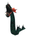 蛟龙 |
50 | 360 | ∞ | 20 | – | – | 300 |
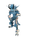 厄妖 |
50 | 180 | ∞ | 20 | – | 8 | 300 |
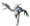 无眼者 |
30 | 90 | ∞ | 20 | – | 8 | 300 |
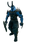 巨人战士 |
30 | 90 | ∞ | 20 | – | – | – |
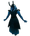 巨人巫师 |
30 | 90 | ∞ | 20 | – | – | 300 |
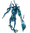 灰巨人 |
30 | 90 | ∞ | 30 | – | – | – |
| 驼鹿 | 25 | 90 | 15 | 6 | – | 30 | – |
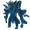 巨魔长老 |
300 | 90 | ∞ | 90 | – | – | 500 |
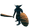 丑地精俘虏 |
30 | 90 | ∞ | 20 | – | 8 | 300 |
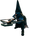 被囚禁的矮人 |
40 | 90 | ∞ | 20 | 避开对象 | 15 | 300 |
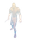 堕落战士 |
30 | 90 | ∞ | 10 | – | – | – |
| 影子 | 30 | 90 | ∞ | 0.5 | 害怕对象 | – | – |
| 攻略 | |
|---|---|
| 玩家 | |
| 战斗 | |
| 生成 | |
| 建材 | |
| 界面 | |
| 世界 | |
| 杂项 | |
| 开发 | |
This page details the creature AI, the logic that decides how creatures find targets, move, attack and flee. Hostile creatures use the monster AI, while passive animals such as Deer and Hares use a simpler animal AI.
Senses
A creature notices another creature or player by hearing or seeing it.
- Hearing: the target is heard if it is within the creature's hear range and closer than the target's own noise range. Inside dungeons and other interiors, the hear range is capped at 12 meters.
- Sight: the target is seen if it is within the creature's view range multiplied by the target's stealth factor, and nothing blocks the line between the creature's eyes and the target (the target's center when it is crouching). A creature that is not alerted only sees targets within its view angle to either side of the direction it faces; an alerted creature sees in all directions. Mist blocks sight in the Mistlands unless the creature has mist vision.
- Players in ghost mode or debug fly mode can be neither heard nor seen.
A creature becomes alerted when:
- It sees its target within its alert range, multiplied by the target's stealth factor.
- It takes damage. It also targets the attacker.
- A projectile hits near it. Unless it is a creature that flees when not alerted, it also targets the shooter.
- It is in hunt mode, which keeps it alerted at all times.
Alerted creatures run instead of walk.
Sleeping
Some creatures, such as sleeping Draugr and Stone Golems, spawn asleep. A sleeping creature does nothing until it wakes up, which happens when a player comes within its wake-up range, when a player's noise reaches it (for creatures that wake up from noise, up to 50 meters), when it takes damage, or when it is in hunt mode.
Targeting
Monsters look for a new target every 2 seconds if a player is within 50 meters, otherwise every 6 seconds. Passive animals look for threats every 2 seconds if any creature is within 32 meters, otherwise every 10 seconds.
In hunt mode, the creature is always alerted. Event creatures hunt players, and so do Eikthyr, The Elder, Bonemass, Moder, Yagluth and Fallen Warriors.
If the creature doesn't manage to attack during the last 15 seconds while chasing a target, it will enter the "Unable to attack the target" mode for 15 seconds, which makes structure targeting more likely.
Creatures
The closest creature or player with following conditions is selected as the target:
- The target is hostile.
- The target can be heard or seen.
- The target is not sleeping.
- The target is within the alert range of the stay location (for tamed creatures that are commanded to stay still).
- The target is within the alert range of the player location (for tamed creatures that are commanded to follow).
If the creature is in hunt mode and can't find a target, it will automatically target the closest player within 200 meters. This doesn't require hearing or seeing the player.
Priority structures
The closest priority structure (most Player base structures, everything in crafting tab, chests and boats) within the creature view range is selected as the target if:
- No target creature or the target creature can't be reached (when in "Unable to attack the target" mode).
- The creature can target structures (for example Deathsquitos can't).
- The creature is not tamed.
- The creature is not a Dvergr that is still friendly (see Aggravation).
The structure must also be visible from the creature's eyes.
Other structures
Random structure within 10 meters is selected as the target if:
- The creature is in "Unable to attack the target" mode.
- Target creature is a player that can't be reached.
- The creature is alerted.
- No target structure or the target structure can't be reached.
- The creature can target structures (for example Deathsquitos can't).
- The creature is not tamed.
Dropping aggro
Creatures drop aggro in following conditions:
- The target hasn't been seen or heard for 30 seconds.
- The creature hasn't attacked for 60 seconds. This is skipped when a creature in hunt mode is targeting a player.
- The creature is farther from its spawn point than its maximum chase distance and the target hasn't been seen or heard for 1 second. This is skipped for creatures with no maximum chase distance and also when a creature in hunt mode is targeting a player.
When dropping aggro, creatures lose the alerted status (unless in hunt mode) and forget their current target. This also resets the timer for not attacking. The next target check will be done after 5 seconds.
Aggravation
Dvergr, Kvastur and Mistiles are aggravatable: they are neutral towards players until aggravated. They become aggravated when:
- A player damages any aggravatable creature. All aggravatable creatures within 20 meters become aggravated and alerted.
- A player damages an object protected by their faction's ward more than a set number of times (five for Dvergr, once for Kvastur, four for Mistiles), or destroys one. This affects the creatures of that faction within twice the ward's radius.
Aggravated creatures treat players as enemies and can target player structures.
Actions
Following actions are checked in order every update. The first one that applies is performed:
- Moving towards water (creatures that avoid land).
- Leaving and despawning (night creatures during the day, event creatures after the event).
- Fleeing from a player wearing the Crown of Valheim (non-boss creatures).
- Fleeing from the target when avoiding conflict.
- Fleeing on low health.
- Leaving lava.
- Avoiding fire.
- Fleeing from "no monsters" zones.
- Fleeing from an unreachable target.
- Eating food.
- Circling around the target.
- Attacking, healing or supporting, depending on the selected skill.
- Following a player (tamed only).
- Idle movement.
Fleeing
Fleeing towards water
Creatures that are set to avoid land and are not swimming, will try to find the deepest water and flee towards it. This behavior is enabled for Leeches, Serpents and the Bonemaw.
The water is searched every 0.5 or 2 seconds (longer interval when water has been found already).
The creature checks 10 random points from 4 to 20 meters. If the lowest point is below water level, the creature will run towards it. If no sufficient point is found, the creature keeps the current direction. Pathfinding is not used for this behavior.
Leaving and despawning
During day time, creatures that are set to despawn during the day will flee from the nearest player if they aren't targeting a creature or they don't have line of sight to the target. This behavior is enabled for creatures that are spawned from night-time only spawn zones. This behavior is disabled for creatures that have started taming process.
After an event ends, creatures that are spawned from the event stop hunting. Once they have no target and are no longer alerted, they walk away from the nearest player and despawn.
The creature finds the closest player within 40 meters. If no player is found, the creature disappears. Otherwise the creature uses pathfinding to move 5 meters away from the player. The pathfinding is refreshed every tick.
Crown of Valheim
When the target is a player wearing the Crown of Valheim, non-boss creatures flee from that player instead of attacking.
Fleeing from the target when avoiding conflict
Creatures that avoid conflict flee from their target when they are not alerted and the target is outside their alert range. This behavior is enabled for Boars, Necks and Hens. It does not apply to creatures in hunt mode, such as those spawned by events.
Passive animals such as Deer, Hares and Seals always flee from any creature they sense. They stay alerted until they have not sensed a threat for a few seconds.
Fleeing on low health
Creatures with a low health threshold flee from the target when their health drops below it and they have been hurt recently. Charred Twitchers flee below 90% health if they have been hurt within the last 4 seconds.
Leaving lava
Creatures standing in lava move out of it, unless their target is also above or in lava.
Avoiding fire
Creatures that are afraid of fire (Boars, Necks, Hens, Deer and other passive animals, and Shadows):
- Do not randomly wander into fire.
- Become alerted and flee when they get within 3 meters of a fire source, and keep fleeing for 6 seconds afterwards.
- Forget their current target while fleeing.
Creatures that avoid fire (for example Greydwarfs, Greylings, Bears and Viles):
- Do not randomly wander into fire.
- When within 3 meters of a fire source, move around it instead of passing through.
- This means creatures with less than a 3-meter attack range do not attack a player holding a Torch and move around them instead.
- Creatures with more than a 3-meter attack range can attack from far away, if they enter the flee range during an attack they will change the attack direction.
Tamed creatures ignore fire.
Fleeing from "no monsters" zones
Untamed creatures flee from targets that are inside a "no monsters" zone. Without a target, they flee from the zone when they get within 7.5 meters of its bounds.
Fleeing from an unreachable target
Creatures flee from the target when they haven't attacked for 30 seconds and have taken damage during the last 20 seconds. This behavior is enabled for most monsters; creatures such as Blobs, Wraiths, Seekers, Bats and most bosses don't flee this way.
Eating food
Creatures that eat items (mostly tameable creatures) look for food every 10 seconds when they are not alerted or don't have a target. They search within 10 meters and walk to the closest reachable item they can eat. Tamed creatures only look for food when hungry.
Circling around the target
Some creatures periodically circle around their target instead of attacking. For example, Greydwarfs and Greylings circle every 6 seconds, Fulings and Elakings every 8 seconds, and Lox, Moose and Asksvin every 30 seconds. The circling lasts a few seconds (5 by default).
Many creatures, such as Wolves, Fulings, Necks and Dvergr, also circle around the target while all their attacks are on cooldown.
Using skills
Creatures update their next skill every second when they have a target. Following conditions are used for the selection:
- Attack skills are only available if the target is within the minimum and maximum attack range.
- Healing skills are only available when the creature is hurt or there is a hurt friendly creature within the vision range (line of sight is not required).
- Support skills are only available when there is another friendly creature within the vision range (line of sight is not required).
- Skills which are on cooldown won't be available.
- Skills which are only usable when walking, swimming or flying won't be available when in the wrong mode.
- Some skills are only usable within a health range, inside dungeons, or inside mist.
The next skill is randomly selected from the available attacks, unless one of the skills is marked as priority.
If no skills are available, then the next skill is randomly selected from attack skills that can't reach the target (excluding attacks where the target is too close). If still no skill, then the next skill is randomly selected from all attacks, even if they are on cooldown (excluding attacks where the target is too close).
If the next skill is on cooldown:
- Circulate around the target within random move distance, if the creature is set to circle around the target.
- Move towards the target until within attack range and wait until the skill is ready.
If the next skill is ready:
- Structures: Move towards the target until within attack range and there is line of sight. Then rotate towards the target and attack.
- Hidden creatures: Move towards the last known location. When reached, randomly move around the location. After 15 seconds of not attacking, prioritize structures for 15 seconds.
- Detected creatures: Update last known location. Move towards the target until within attack range and there is line of sight. Some creatures aim ahead of a moving target. Become alerted when the target is within alert range and there is line of sight. Attack the target when target is within the attack range.
- Healing and support: Move towards the friendly creature and use the skill when within attack range.
Following
Tamed creatures that are commanded to follow walk towards the player, run when more than 10 meters away and stop within 3 meters.
Idle movement
Creatures without a target randomly move around a center point: their patrol point (if set), their current location (if tamed or hunting) or their spawn location. When further than twice their random movement range from the center point, they run back towards it. Creatures that avoid water do not wander into water, and those that avoid fire do not wander into fire.
Creature data
The following table lists the AI values of common creatures. A view angle of 180° or more means the creature sees in all directions. ∞ means no limit.
| Creature | View range (m) | View angle (°) | Hear range (m) | Alert range (m) | Fire | Circles every (s) | Max chase (m) |
|---|---|---|---|---|---|---|---|
| Boar | 20 | 90 | 20 | 6 | Afraid | – | – |
| Neck | 20 | 90 | 20 | 6 | Afraid | – | – |
| Deer | 25 | 45 | 15 | – | Afraid | – | – |
| Greyling | 30 | 90 | ∞ | 20 | Avoids | 6 | – |
| Greydwarf | 30 | 90 | ∞ | 20 | Avoids | 6 | – |
| Greydwarf Brute | 30 | 90 | ∞ | 20 | – | 15 | – |
| Greydwarf Shaman | 30 | 90 | ∞ | 20 | – | – | – |
| Troll | 30 | 90 | ∞ | 20 | – | – | 200 |
| 30 | 90 | ∞ | 20 | – | – | – | |
| Ghost | 30 | 90 | 30 | 20 | – | – | – |
| Bear | 25 | 90 | 15 | 6 | Avoids | 9 | – |
| 30 | 90 | ∞ | 10 | – | – | – | |
| Draugr Elite | 30 | 90 | ∞ | 10 | – | – | – |
| Blob | 30 | 90 | ∞ | ∞ | – | – | – |
| Leech | 30 | 360 | ∞ | 20 | – | – | 100 |
| Wraith | 40 | 90 | ∞ | 30 | – | – | – |
| Abomination | 30 | 90 | ∞ | 20 | – | – | – |
| 30 | 90 | ∞ | 20 | – | – | – | |
| 30 | 90 | ∞ | 20 | – | – | – | |
| 30 | 90 | ∞ | 20 | – | – | – | |
| 30 | 90 | ∞ | 20 | – | – | – | |
| 40 | 90 | ∞ | 30 | – | – | 200 | |
| 30 | 90 | ∞ | 20 | – | – | – | |
| 30 | 180 | ∞ | 30 | – | – | – | |
| 30 | 90 | ∞ | 20 | – | 8 | 300 | |
| Fuling Berserker | 30 | 90 | ∞ | 20 | – | – | 300 |
| Fuling Shaman | 40 | 90 | ∞ | 20 | – | 15 | 300 |
| Deathsquito | 30 | 90 | 30 | 20 | – | – | – |
| Lox | 25 | 90 | 15 | 6 | – | 30 | – |
| Growth | 30 | 90 | ∞ | ∞ | – | – | – |
| Vile | 25 | 90 | 15 | 6 | Avoids | 9 | – |
| 30 | 120 | ∞ | 30 | – | 10 | – | |
| Seeker Soldier | 30 | 90 | ∞ | 30 | – | – | – |
| Tick | 30 | 90 | ∞ | 20 | – | – | – |
| Gjall | 40 | 90 | ∞ | 30 | – | 30 | 200 |
| Dvergr Rogue | 40 | 90 | ∞ | 20 | – | 15 | 300 |
| 30 | 90 | ∞ | 20 | – | – | – | |
| 30 | 90 | ∞ | 20 | – | 7 | – | |
| 35 | 150 | 30 | 10 | – | 30 | – | |
| 30 | 180 | ∞ | 30 | Avoids | 20 | – | |
| 30 | 90 | ∞ | 30 | – | – | – | |
| 30 | 180 | ∞ | 50 | – | – | – | |
| Serpent | 50 | 360 | ∞ | 20 | – | – | 300 |
| Elaking | 50 | 180 | ∞ | 20 | – | 8 | 300 |
| Eyeless One | 30 | 90 | ∞ | 20 | – | 8 | 300 |
| Krigen | 30 | 90 | ∞ | 20 | – | – | – |
| Hexen | 30 | 90 | ∞ | 20 | – | – | 300 |
| Barka | 30 | 90 | ∞ | 30 | – | – | – |
| Moose | 25 | 90 | 15 | 6 | – | 30 | – |
| Gammeltroll | 300 | 90 | ∞ | 90 | – | – | 500 |
| Captive Fuling | 30 | 90 | ∞ | 20 | – | 8 | 300 |
| Imprisoned Dvergr | 40 | 90 | ∞ | 20 | Avoids | 15 | 300 |
| Fallen Warrior | 30 | 90 | ∞ | 10 | – | – | – |
| Shadow | 30 | 90 | ∞ | 0.5 | Afraid | – | – |
| Guides | |
|---|---|
| Player | Player • Health • Stamina • Eitr • Adrenaline • Death • Forsaken power • Skills • Status effects • Movement speed • Magic • Fishing • Riding • Sleeping • Emotes |
| Combat | |
| Spawning | |
| Building | |
| UI | |
| World | |
| Misc | |
| Development | |